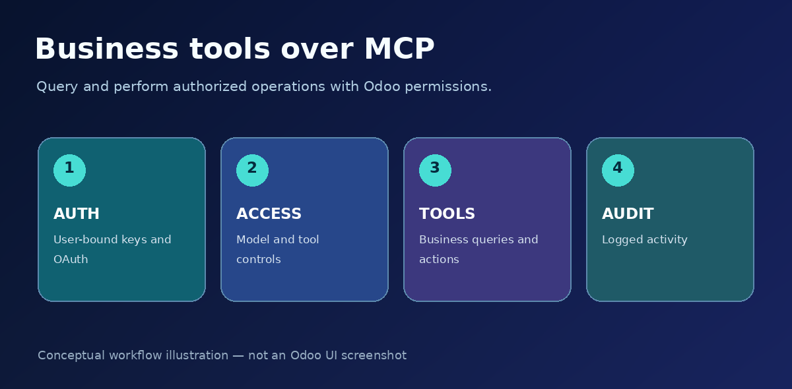
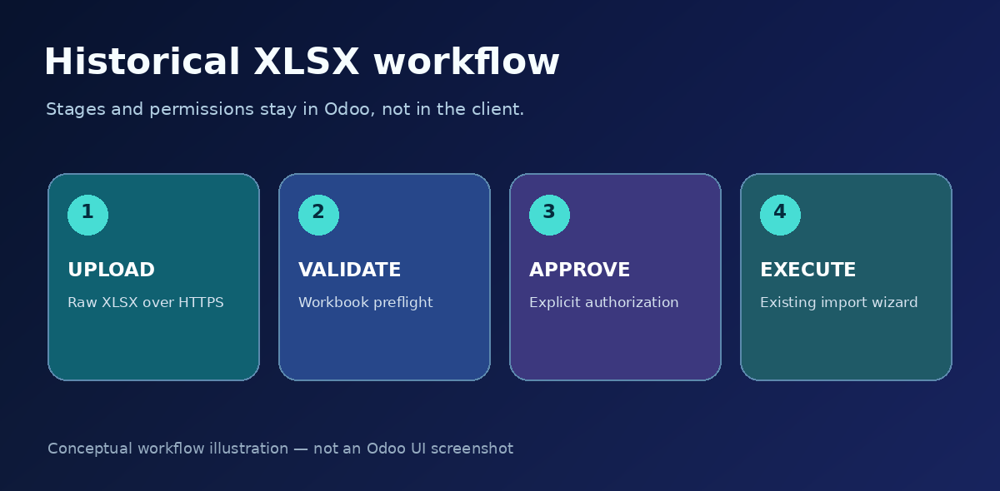

Odoo Claude MCP Connector
Connect an MCP-compatible AI client to Odoo 18 business tools with Odoo user permissions, configurable access and historical XLSX import workflows.
Secure MCP access
Streamable HTTP MCP endpoint, user-mapped API key and OAuth support with configurable tool and model access.
Business tools
Structured queries, business reports, and controlled draft creation or business actions based on configured permissions.
Historical XLSX
Upload historical developer-unit workbooks, inspect structural preflight results, approve, and execute using the existing Odoo import wizard.
MCP business tools
Explore selected models and fields, query authorized records, and access purpose-built sales, CRM, accounting, purchasing, and inventory insights when corresponding apps are installed.

Historical import process
Use a direct binary XLSX upload endpoint or available MCP upload tools. The workbook is staged as an import session; authorized users can validate, approve, and execute it. The existing historical import wizard retains authority over business and financial validation.

Administration and security
- Odoo user and company access context for business operations.
- Per-key tool and model controls, configurable write access, and audit logs.
- Separate historical-import operator and approver permissions.
- Upload credential stored as a SHA-256 hash; the upload endpoint checks filename, format, size and checksum.
- No historical financial execution occurs during the direct file-upload request.
Installation requirements
Odoo version: 18.0.
Required Odoo module: units_historical_process. The historical import feature also uses the installed import.historical.dev.unit.wizard implementation. Ensure these components are available on your target instance before installation.
Client setup: configure an MCP client connection to your own Odoo server and appropriate credentials and permissions. Direct XLSX transfer from a cloud execution environment requires network access to the instance and an appropriately scoped network secret.
Important notes
Historical preflight checks workbook structure; business validation is performed by the existing importer during execution. Re-import behavior depends on your installed historical import implementation. This module does not promise that a financial re-import is risk-free.
AI client access and any third-party subscriptions are separate from this Odoo module. The module does not include an AI model or third-party account.
Odoo 18 • MCP integration • Controlled historical import